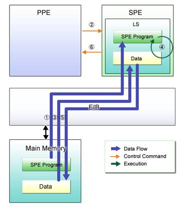
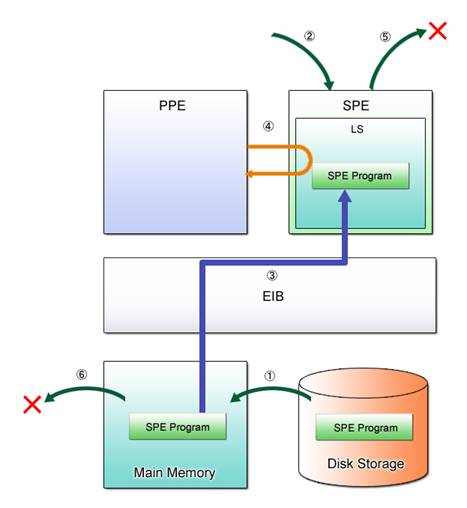
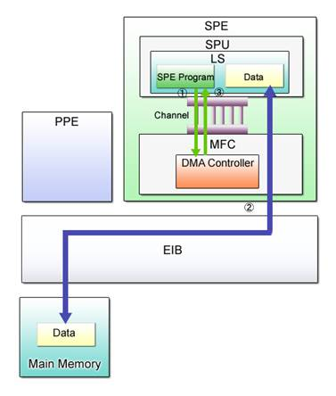
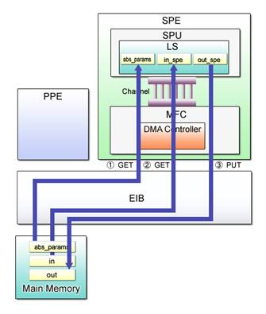
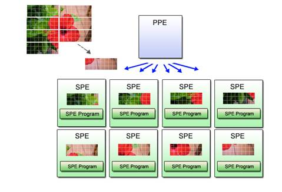
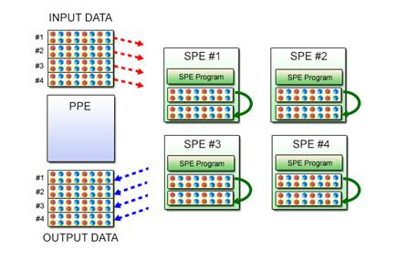
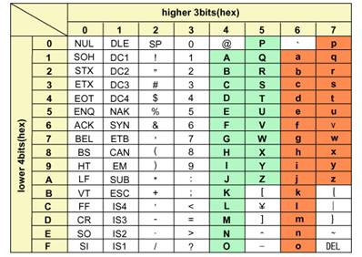
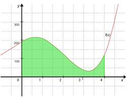
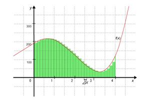
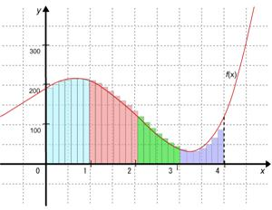

Chapter 3 Basics of SPE Programming
This chapter describes how to write programs for SPEs, the second characteristic aspect of Cell programming.
SIMD programs that run on the PPE have already been explained in Chapter 2. With the use of the PPE only, however, it is not possible to benefit fully from the Cell’s huge potential for computing performance. As stated in Section1.3, effective use of multiple SPEs is the key to maximizing the performance of the Cell.
The first section of this chapter presents a brief description of SPE programming. In the following sections, programming techniques are explained using sample programs. Several programming exercises are also provided at the end of the chapter.
Table 3.1: Structure of Chapter 3
|
Section |
Title |
Description |
|
Section 3.1 |
SPE Programming Overview |
Explains the fundamentals of SPE programming. |
|
Section 3.2 |
Simple SPE Program |
Describes programming for running the SPE program. |
|
Section 3.3 |
Transporting Data by DMA Transfer |
Describes DMA transfer for transferring data between the PPE program and the SPE program. |
|
Section 3.4 |
SIMD Programming on SPE |
Demonstrates SIMD operations using the SPE. |
|
Section 3.5 |
Parallel Programming Using Multiple SPEs |
Describes how to run applications on multiple SPEs. |
|
Section 3.6 |
Exercise (3-1): Parameter Display Program |
To review your learning from Section 3.2, a program for displaying a parameter passed from the PPE program is created. |
|
Section 3.7 |
Exercise (3-2): Case Conversion Program |
To review your learning from Sections 3.3 and 3.4, a program for lower to upper case character conversion is created. |
|
Section 3.8 |
Exercise (3-3): Sectional Measurement Program |
To review your learning from Sections 3.4 and 3.5, a program for area calculation using multiple SPEs is created. |
|
Section 3.9 |
Exercise (3-4): Grayscale Conversion Program (for Single SPE) |
As a comprehensive review of Chapter 3, a grayscale conversion program is created using a single SPE. |
|
Section 3.10 |
Exercise (3-5): Grayscale Conversion Program (for Multiple SPEs) |
As a comprehensive review of Chapter 3, a grayscale conversion program is created using multiple SPE. |
3.1 SPE Programming Overview
As already mentioned, programming the PPE does not differ from C programming on Linux. In contrast, SPEs must be programmed in a way somewhat different from conventional methods. Let’s start with a run-through of what we’ve learned in Section 1.3 and the library used in SPE programming.
3.1.1 SPE Program Execution
The most basic of the programming models using SPEs is the PPE-centric approach in which the main program runs on the PPE and sub-programs are executed on SPEs. Descriptions hereafter are based on this PPE-centric model. Programmers should note that the execution of SPE programs is controlled via the PPE program.
Fig. 3.1 shows a typical SPE program execution sequence with the PPE-centric model.

Fig. 3.1: SPE Program Execution
(1) (PPE Program) Loads the SPE program to the LS.
(2) (PPE Program) Instructs the SPE to execute the SPE program.
(3) (SPE Program) Transfers required data from the main memory to the LS.
(4) (SPE Program) Processes the data in the LS in accordance with the requirements.
(5) (SPE Program) Transfers the processed result from the LS to the main memory.
(6) (SPE Program) Notifies the PPE program of the termination of processing.
The execution procedure starts by loading the SPE program from the main memory to the LS. The SPE initiates program execution as soon as the execute command is received from the PPE program. Data necessary for computation is transferred from the main memory to the LS and upon completion of processing, the processed result is returned to the main memory. Then the SPE program terminates and relays this information back to the PPE program so that the PPE program can further process the SPE-processed data.
For other types of Cell programming models, refer to Section 1.3 of the “Cell Broadband Engine Programming Tutorial” posted by IBM on the following website.
(http://www.ibm.com/chips/techlib/techlib.nsf/techdocs/FC857AE550F7EB83872571A80061F788)
3.1.2 SPE Runtime Management Library version 2 (libspe2)
The SPE Runtime Management Library (libspe) is used to control SPE program execution from the PPE program. Developed jointly by Sony Computer Entertainment Inc., IBM and Toshiba Corporation, this library is licensed under the GNU LPGL. The greatest difference between version 1 and version 2 lies in the API used. This tutorial is premised on the use of the libspe version 2 (hereinafter abbreviated as libspe2).
libspe2 does not rely on the underlying operating system, i.e., it can run on a variety of OS platforms. An implementation scheme for Linux has already been published. This scheme makes use of the SPU File System (SPUFS) as the Linux kernel interface.
libspe2 handles SPEs as virtual objects called SPE contexts. This means that from the programming point of view, SPE programs can be loaded and executed by operating SPE contexts. Libspe2 comprises a set of APIs shown in Fig. 3.2. Among them, SPE programming explained in this tutorial makes use of the low-level API offered by the BASE part.
Fig. 3.2: libspe2 Library
Refer to Section 5 of the “SPUFS: The Cell Synergistic Processing Unit as a virtual file system” for more information about the SPUFS.
(http://www.ibm.com/developerworks/power/library/pa-cell/)
Now then, let us discuss the details of SPE programming, using specific sample programs. Section 3.2 describes the rudimentary programming for loading, executing and terminating an SPE program. Section 3.3 explains how to transfer data between the PPE program and the SPE program. Section 3.4 covers SIMD programming on the SPE, and Section 3.5 introduces you to parallel programming using multiple SPEs.
3.2 Simple SPE Program
This section describes the basic method of programming using libspe2. Let’s get started with an easy example of SPE programming that allows a simple SPE program to run on a single SPE.
3.2.1 SPE Program Execution Sequence
When libspe2 is used, the SPE program is executed as follows from the PPE program.
(1) Open the SPE program image.
(2) Create the SPE context.
(3) Load the SPE program into the LS.
(4) Execute the loaded SPE program.
(5) Destroy the SPE context.
(6) Close the SPE program image.
Fig. 3.3 provides a graphic representation of these steps.

Fig. 3.3: SPE Program Execution
They are also detailed in the next sections using a simple SPE executable.
3.2.2 Hello World Program
List (3-1) shows the SPE program for displaying “Hello world!”, taken as an example to explain the basics of programming for SPE program execution from the PPE program.
List (3-1): Hello world program (for the SPE)
|
1 #include <stdio.h> 2 3 int main(unsigned long long spe, unsigned long long argp, unsigned long long envp) 4 { 5 printf("Hello world!¥n"); 6 7 return 0; 8 }
|
(1) Opening the SPE program image
The spe_image_open() function opens the SPE program image stored in the ELF executable file.
API Definition (3-1): Prototype declaration in the spe_image_open() function
|
spe_program_handle_t * spe_image_open(const char *filename);
|
|
First argument |
filename |
Specifies the path (either absolute or relative) to the SPE program’s ELF executable file. |
|
Return value |
|
On success, returns the pointer to the opened SPE program image handle. On failure, NULL is returned and an error code is set to errno. |
Example (3-1) shows an example of the use of the spe_image_open() function.
Example (3-1): Opening the SPE program image
|
prog = spe_image_open("./spe_hello.elf");
|
(2) Creating the SPE context
Next, the spe_context_create() function creates a new SPE context.
API Definition (3-2): Prototype declaration in the spe_context_create() function
|
spe_context_ptr_t spe_context_create(unsigned int flags, spe_gang_context_ptr_t gang);
|
|
First argument |
flags |
Specifies the behavior of the SPE context. Set this flag to “0” as it is not used in this tutorial. |
|
Second argument |
gang |
Specifies the SPE gang context. Set NULL as the SPE gang context is not used in this tutorial. Refer to the terminology list in the “SPE Runtime Management Library version 2.0” for more information on the SPE gang context. |
|
Return value |
|
On success, returns the pointer to the newly created SPE context. On failure, NULL is returned and an error code is set to errno. |
When it is no longer needed by the application, the SPE context is discarded by using the spe_context_destroy() function.
Example (3-2) shows an example of the use of the spe_context_create() function.
Example (3-2): Creating the SPE context
|
spe = spe_context_create(0, NULL);
|
(3) Loading the SPE program to the LS
Prior to running the SPE context, the SPE program must be loaded into the LS. This is done by using the spe_program_load function.
API Definition(3-3): Prototype declaration in the spe_program_load() function
|
int spe_program_load(spe_context_ptr_t spe, spe_program_handle_t *program);
|
|
First argument |
spe |
Specifies the pointer to the SPE context. |
|
Second argument |
program |
Specifies the pointer to the handle of the SPE program image to be loaded into the LS. |
|
Return value |
|
On success, “0” is returned. On failure, “-1” is returned, with an error code set to errno. |
Example (3-3) shows an example of the use of the spe_program_load() function.
Example (3-3): Loading the SPE program into the LS
|
ret = spe_program_load(spe, prog);
|
(4) Executing the loaded SPE program
The spe_context_run() function requests execution of the program loaded in the SPE context.
API Definition (3-4): Prototype declaration in the spe_context_run() function
|
int spe_context_run(spe_context_ptr_t spe, unsigned int *entry, unsigned int runflags, void *argp, void *envp, spe_stop_info_t *stopinfo);
|
|
First argument |
spe |
Specifies the pointer to the SPE context that should be run. |
|
Second argument |
entry |
Specifies the pointer to the variable containing the address at which the SPE program should start executing. Normally, SPE_DEFAULT_ENTRY is used as this address. |
|
Third argument |
runflags |
Specifies a flag that requests certain specific behavior. Normally, set to “0” for default behavior. |
|
Fourth argument |
argp |
Specifies the value to be passed to the second argument of the SPE program’s main() function. |
|
Fifth argument |
envp |
Specifies the value to be passed to the third argument of the SPE program’s main() function. |
|
Sixth argument |
stopinfo |
Specifies the pointer to the variable used to store information on the reason why the SPE program stopped execution. |
|
Return value |
|
On success, “0” or a positive number is returned. On failure, “-1” is returned and an error code is set to errno. |
Refer to the “SPE Runtime Management Library Version 2.0” for detailed specifications of individual arguments.
(http://www.ibm.com/chips/techlib/techlib.nsf/techdocs/1DFEF31B3211112587257242007883F3)
Control is passed to the SPE program when the spe_context_run() function is called and returned to the PPE program when the SPE program is terminated. The return value is “0” when returned from the SPE program’s main() function or when the exit() function is called by the SPE program. In other cases, a value other than “0” is returned. Information about the interruption of SPE program execution is stored in the area specified by the sixth argument stopinfo.
Example (3-4) shows an example of the use of the spe_context_run() function.
Example (3-4): Executing the loaded SPE program
|
ret = spe_context_run(spe, &entry, 0, NULL, NULL, &stop_info);
|
(5) Destroying the SPE context
The spe_context_destroy() function destroys the SPE context that is no longer needed by the application after the execution of the SPE program.
API Definition (3-5): Prototype declaration in the spe_context_destroy() function
|
int spe_context_destroy(spe_context_ptr_t spe);
|
|
First argument |
spe |
Specifies the pointer to the SPE context that should be destroyed. |
|
Return value |
|
On success, “0” is returned. On failure, “-1” is returned and an error code is set to errno. |
Example (3-5) shows an example of the use of the spe_context_destroy() function.
Example (3-5): Destroying the SPE context
|
ret = spe_context_destroy(spe);
|
(6) Closing the SPE program image
The spe_image_close() function closes the SPE program image that was opened in Step (1).
API Definition (3-6): Prototype declaration in the spe_image_close() function
|
int spe_image_close(spe_program_handle_t *program);
|
|
First argument |
program |
Specifies the pointer to the handle of the SPE program image that should be closed. |
|
Return value |
|
On success, “0” is returned. On failure, “-1” is returned and an error code is set to errno. |
Example (3-6) shows an example of the use of the spe_image_close() function.
Example (3-6): Closing the SPE program image
|
ret = spe_image_close(prog);
|
This completes a quick rundown of how to program execution of the SPE program from the PPE program using libspe2.
3.2.3 Sample Program
Now, let’s take a look at the entire source code you need to write for the above operation.
Sample Program (3-1): Hello world program (PPE program)
|
1 #include <stdio.h> 2 #include <stdlib.h> 3 #include <libspe2.h> 4 5 int main(int argc, char **argv) 6 { 7 int ret; 8 9 spe_context_ptr_t spe; 10 spe_program_handle_t *prog; 11 unsigned int entry; 12 spe_stop_info_t stop_info; 13 14 prog = spe_image_open("hello_spe.elf"); 15 if (!prog) { 16 perror("spe_image_open"); 17 exit(1); 18 } 19 20 spe = spe_context_create(0, NULL); 21 if (!spe) { 22 perror("spe_context_create"); 23 exit(1); 24 } 25 26 ret = spe_program_load(spe, prog); 27 if (ret) { 28 perror("spe_program_load"); 29 exit(1); 30 } 31 32 entry = SPE_DEFAULT_ENTRY; 33 ret = spe_context_run(spe, &entry, 0, NULL, NULL, &stop_info); 34 if (ret < 0) { 35 perror("spe_context_run"); 36 exit(1); 37 } 38 39 ret = spe_context_destroy(spe); 40 if (ret) { 41 perror("spe_context_destroy"); 42 exit(1); 43 } 44 45 ret = spe_image_close(prog); 46 if (ret) { 47 perror("spe_image_close"); 48 exit(1); 49 } 50 51 return 0; 52 }
|
|
Line 3 |
Used to include the header file “libspe2.h” required for controlling the SPE. |
|
Lines 9〜12 |
Used to declare the variables for handling the SPE program and context. |
|
Line 14 |
Using the spe_image_open() function, opens the SPE program image to be executed. |
|
Line 20 |
Using the spe_context_create() function, creates the SPE context. |
|
Line 26 |
Using the spe_program_load() function, loads the SPE program into the LS. |
|
Line 33 |
Using the spe_context_run() function, executes the SPE program. |
|
Line 39 |
Using the spe_context_destroy() function, destroys the executed SPE context. |
|
Line 45 |
Using the spe_image_close() function, closes the previously opened SPE program image. |
Sample Program (3-2): Hello world program (SPE program)
|
1 #include <stdio.h> 2 3 int main(unsigned long long spe, unsigned long long argp, unsigned long long envp) 4 { 5 printf("Hello world!¥n"); 6 7 return 0; 8 }
|
|
Line 3 |
Used to pass the assigned SPE ID to the first argument spe of the main() function. To the second and third arguments of this function, the fourth and fifth arguments (argp and envp) of the PPE-called spe_context_run() function are passed respectively. |
|
Line 5 |
Used to display the message “Hello world!” on the standard output. |
Click here for the source code for the hello world program.
3.2.4 Program Compilation and Execution
Before getting started, please confirm that your development environment complies with the requirements described in Section 1.4. Any application developed by utilizing the SPE includes both PPE and SPE programs, making it necessary to compile the source code separately into two ELF executable files.
To compile the PPE program, use the gcc command. The use of the libspe2 library entails the need to specify -lspe2 as a gcc linker option to link to libspe2.so.
Compilation of the SPE program is performed by the spu-gcc command. The example below shows how to compile the hello world program.
Example (3-7): Program compilation
|
$ gcc -lspe2 hello_ppe.c -o hello_ppe.elf $ spu-gcc hello_spe.c -o hello_spe.elf
|
To execute the application, run the PPE program at the shell prompt. The example below shows how to execute the hello world program.
Example (3-8): Program execution
|
$ ./hello_ppe.elf Hello world! $
|
3.3 Transporting Data by DMA Transfer
A data transfer system called DMA transfer is used to move data between the PPE program and the SPE program. In the next few pages, we will take a brief look at what it is and how it is set up between the PPE program and the SPE program.
3.3.1 DMA Transfer Overview
As explained previously in Section 1.2, each SPE has its own local memory called the LS. This, however, is the only memory the SPE can access directly. In order to allow the SPE program to share the main memory’s data with the PPE program, it is necessary to furnish some way of transferring data between the main memory and the LS.
DMA (Direct Memory Access) transfer is a method whereby data is transferred from memory to peripheral devices without using the CPU. The Cell capitalizes on this high-speed data transfer to make data transfer possible between the main memory and the LS. DMA transfer between these two memories is basically governed by the SPE program and executed in the following sequence.
(1) Issues a DMA transfer command.
(2) Executes DMA transfer between the main memory and the LS.
(3) Waits for the completion of DMA transfer.
Fig. 3.4 provides a graphic representation of these steps.

Fig. 3.4: DMA Transfer
In Step (1), the SPE program sends a DMA transfer command to the MFC. Execution of DMA transfer is performed by the DMA controller contained in the MFC.
In Step (2), the MFC’s DMA controller initiates a DMA transfer upon receipt of the DMA transfer command by the MFC. Once the command is issued, the SPE program can continue execution in parallel with the DMA transfer by the MFC.
The SPE program checks the completion of the MFC’s DMA transfer prior to using the transferred data. This process of checking is indicated by Step 3.
After ensuring that DMA transfer is completed successfully, the SPE program starts necessary computational operations on the data.
The SPU utilizes channels as the primary interface for transporting requests and data to and from the MFC. For instance, the DMA transfer command and information about the completion of DMA transfer are sent and received through this interface. There are a variety of channels designed for a variety of purposes. Refer to Chapter 9 of the “Cell Broadband Engine Architecture” for details of the channel interface.
3.3.2 Programming DMA Transfer
This section focuses on programming DMA transfer. List (3-2) shows the SPE program that causes DMA transfer to occur from the main memory to the LS.
List (3-2): Execution of DMA transfer (SPE program)
|
1 spu_mfcdma64(&abs_params, mfc_ea2h(argp), mfc_ea2l(argp), 2 sizeof(abs_params_t), tag, MFC_GET_CMD); 3 spu_writech(MFC_WrTagMask, 1 << tag); 4 spu_mfcstat(MFC_TAG_UPDATE_ALL);
|
(1) Issuing a DMA transfer command
The DMA transfer command is issued to the MFC using the spu_mfcdma64() function.
The spu_mfcdma64() function makes it possible to issue the command so that the specified number of data bytes are transferred in the specified direction between the specified areas of the main memory and the LS.
The main memory and the LS have different address spaces. The main memory address used by the PPE program is the effective address (EA), whereas the LS address used by the SPE program is called the local storage address (LSA).
API Definition (3-7): Prototype declaration in the spu_mfcdma64() function
|
void spu_mfcdma64(volatile void *lsa, unsigned int eahi, unsigned int ealow, unsigned int size, unsigned int tagid, unsigned int cmd);
|
|
First argument |
lsa |
Specifies the initial address (LSA) of the memory area of the LS used for DMA transfer. |
|
Second argument |
eahi |
Specifies the upper 32 bits of the initial address (EA) of the memory area of the main memory used for DMA transfer. |
|
Third argument |
ealow |
Specifies the lower 32 bits of the initial address (EA) of the memory area of the main memory used for DMA transfer. |
|
Fourth argument |
size |
Specifies the size of data to be transferred. |
|
Fifth argument |
tagid |
Specifies the DMA tag number in a range from 0 to 31. This tag number is used as an identifier to check the completion of DMA transfer. |
|
Sixth argument |
cmd |
Specifies
the transfer direction: MFC_PUT_CMD to transfer (PUT) data from the LS to the main memory. |
The initial addresses specified for the first, second and third arguments (lsa, eahi and ealow) must be aligned to 16-byte boundaries. The data size specified for the fourth argument (size) must be a multiple of 16 bytes. The maximum specifiable data size is 16 Kbytes. If the values of these arguments are not appropriately set, DMA transfer cannot be executed normally due to the constraints immanent in the Cell architecture. Restrictions on DMA transfer will be discussed in more detail in Section 4.2.1.
In addition, two macros mfc_ea2h() and mfc_ea2l() are defined to make it possible to extract higher 32 bits and the lower 32 bits respectively from the 64-bit effective address for use as the second argument eahi and the third argument ealow .
API Definition (3-8): Definition of the mfc_ea2h() macro
|
#define mfc_ea2h(ea) (unsigned int)((unsigned long long)(ea)>>32)
|
|
First argument |
ea |
Effective address on the main memory |
API Definition (3-9): Definition of the mfc_ea2l() macro
|
#define mfc_ea2l(ea) (unsigned int)(ea)
|
|
First argument |
ea |
Effective address on the main memory |
After requesting DMA transfer, the spu_mfcdma64() function returns without waiting for the completion of DMA transfer. This makes it necessary for the SPE program to wait for the completion of DMA transfer, because DMA transfer is executed by the DMA controller independently of the SPU. Example (3-9) shows an example of the use of the spu_mfcdma64() function.
Example (3-9): Issuing a DMA transfer command
|
spu_mfcdma64(&spe_params, mfc_ea2h(argp), mfc_ea2l(argp), sizeof(spe_prog_arg_t), tag, MFC_GET_CMD);
|
(2) Executing DMA transfer between the main memory and the LS
The MFC executes data transfer between the main memory and the LS according to the direction specified in the DMA transfer command received from the SPE program. Data transfer is performed asynchronously with the execution of the SPE program.
(3) Waiting for the completion of DMA transfer
As the spu_mfcdma64() function returns without waiting for the completion of DMA transfer, the SPE program is required to confirm whether it is completed successfully. To do this, the SPE program uses the spu_writech() macro and the spu_mfcstat() function.
spu_writech() is a macro used for data passing from the SPU to the MFC via the channel interface.
API Definition (3-10): Definition of the spu_writech() macro
|
#define spu_writech(imm, ra) si_wrch((imm), si_from_uint(ra))
|
|
First argument |
imm |
Specifies the channel to be used. |
|
Second argument |
ra |
Specifies the data to be passed to the MFC. |
To await the completion of DMA transfer, the tag number must be notified to the MFC using the spu_writech() macro. The WrTagMask channel is used for this purpose. A bit flag corresponding to the tag number specified by the fifth argument tagid of the spu_mfcdma64() function is also passed.
The tag is updated every time a tagged DMA transfer command is executed. The update status can be confirmed by using the spu_mfcstat() function.
API Definition (3-11): Prototype declaration for the spu_mfcstat() function
|
unsigned int spu_mfcstat(unsigned int type);
|
|
First argument |
type |
Specifies the method to check tag update. Typically, specify MFC_TAG_UPDATE_ALL. |
When calling the MFC to check the completion of DMA transfer, make sure to use the spu_writech() macro simultaneously with the spu_mfcstat() function. Example (3-10) shows an example of how they are used.
Example (3-10): Waiting for the completion of DMA transfer
|
spu_writech(MFC_WrTagMask, 1 << tag); spu_mfcstat(MFC_TAG_UPDATE_ALL);
|
This completes the tutorial on the execution of DMA transfer.
In the next section, we will look at a sample of a typical program that involves DMA transfer.
3.3.3 Absolute Value Calculation Program Using DMA Transfer
Remember the absolute value calculation program that we worked on in Exercise (2-3)?
It can be written as follows if we were to take advantage of DMA transfer to enable the SPE program to perform the necessary calculations.
List (3-3): Absolute value calculation program (PPE program) (Partial)
|
1 abs_params.ea_in = (unsigned long) in; 2 abs_params.ea_out = (unsigned long) out; 3 abs_params.size = SIZE; 4 5 ret = spe_context_run(spe, &entry, 0, &abs_params, NULL, &stop_info);
|
List (3-4): Absolute value calculation program (SPE program) (Partial)
|
1 /* DMA Transfer 1 : GET input/output parameters */ 2 spu_mfcdma64(&abs_params, mfc_ea2h(argp), mfc_ea2l(argp), 3 sizeof(abs_params_t), tag, MFC_GET_CMD); 4 spu_writech(MFC_WrTagMask, 1 << tag); 5 spu_mfcstat(MFC_TAG_UPDATE_ALL); 6 7 /* DMA Transfer 2 : GET input data */ 8 spu_mfcdma64(in_spe, mfc_ea2h(abs_params.ea_in), mfc_ea2l(abs_params.ea_in), 9 abs_params.size * sizeof(float), tag, MFC_GET_CMD); 10 spu_writech(MFC_WrTagMask, 1 << tag); 11 spu_mfcstat(MFC_TAG_UPDATE_ALL); 12 13 /* Calculate absolute values */ 14 for (i = 0; i < abs_params.size; i++) { 15 if (in_spe[i] > 0) { 16 out_spe[i] = in_spe[i]; 17 } else { 18 out_spe[i] = in_spe[i] * -1; 19 } 20 } 21 22 /* DMA Transfer 3 : PUT output data */ 23 spu_mfcdma64(out_spe, mfc_ea2h(abs_params.ea_out), mfc_ea2l(abs_params.ea_out), 24 abs_params.size * sizeof(float), tag, MFC_PUT_CMD); 25 spu_writech(MFC_WrTagMask, 1 << tag); 26 spu_mfcstat(MFC_TAG_UPDATE_ALL);
|
In a nutshell, the SPE program executes calculations in the following sequence.
(1) Obtains data from the main memory via DMA transfer. (GET)
(2) Processes data.
(3) Returns the processed result to the main memory via DMA transfer. (PUT)
The SPE program has no direct means of knowing what data exists in which area of the main memory. Hence, the PPE program creates a parameter set containing information about the data to be processed by the SPE program (effective addresses and size of input/output data), stores it in advance in the main memory, and passes its effective address to the fourth argument of the spe_context_run() function.
As shown in Fig. 3.5, DMA transfer occurs three times before the SPE program finishes the calculation task.
(1) DMA transfer of input/output parameters (GET)
(2) DMA transfer of input data (GET)
(3) DMA transfer of output data (PUT)

Fig. 3.5: Parameter Passing by DMA Transfer
Initial DMA transfer (GET): Transfers the input/output data parameter set abs_params into the LS. This parameter set provides the effective addresses of the main memory used in the second and third DMA transfers, as well as the data size information necessary for calculations.
Second DMA transfer (GET): Using the effective address ea_in contained in the parameter set, transfers data from the main memory to the data area in_spe of the LS for processing (absolute value calculation in this example) by the SPE program.
Third DMA transfer (PUT): Using the effective address ea_out indicating the output destination address, transfers the calculated result from the scalar array out_spe to the data area of the main memory.
The use of the spe_context_run() function is not the only means of passing parameters to the SPE program. There are other ways of performing the same operation using the MFC functions. Refer to Section 4.1 for a more detailed explanation.
3.3.4 Sample Program
The following illustrates the entire source code you need to write to perform the above absolute value calculations using DMA transfer.
Sample Program (3-3): Absolute value calculation program using DMA transfer (PPE program)
|
1 #include <stdio.h> 2 #include <stdlib.h> 3 #include <libspe2.h> 4 5 #define SIZE (64) 6 7 float in[SIZE] __attribute__((aligned(16))) = { 1, -2, 3, -4, 5, -6, 7, -8, 8 9, -10, 11, -12, 13, -14, 15, -16, 9 17, -18, 19, -20, 21, -22, 23, -24, 10 25, -26, 27, -28, 29, -30, 31, -32, 11 33, -34, 35, -36, 37, -38, 39, -40, 12 41, -42, 43, -44, 45, -46, 47, -48, 13 49, -50, 51, -52, 53, -54, 55, -56, 14 57, -58, 59, -60, 61, -62, 63, -64 }; 15 float out[SIZE] __attribute__((aligned(16))); 16 17 typedef struct { 18 unsigned long long ea_in; 19 unsigned long long ea_out; 20 unsigned int size; 21 int pad[3]; 22 } abs_params_t; 23 24 abs_params_t abs_params __attribute__((aligned(16))); 25 26 int main(int argc, char **argv) 27 { 28 int i; 29 int ret; 30 31 spe_context_ptr_t spe; 32 spe_program_handle_t *prog; 33 unsigned int entry; 34 spe_stop_info_t stop_info; 35 36 prog = spe_image_open("abs_spe.elf"); 37 if (!prog) { 38 perror("spe_image_open"); 39 exit(1); 40 } 41 42 spe = spe_context_create(0, NULL); 43 if (!spe) { 44 perror("spe_context_create"); 45 exit(1); 46 } 47 48 ret = spe_program_load(spe, prog); 49 if (ret) { 50 perror("spe_program_load"); 51 exit(1); 52 } 53 54 abs_params.ea_in = (unsigned long) in; 55 abs_params.ea_out = (unsigned long) out; 56 abs_params.size = SIZE; 57 58 entry = SPE_DEFAULT_ENTRY; 59 ret = spe_context_run(spe, &entry, 0, &abs_params, NULL, &stop_info); 60 if (ret < 0) { 61 perror("spe_context_run"); 62 exit(1); 63 } 64 65 ret = spe_context_destroy(spe); 66 if (ret) { 67 perror("spe_context_destroy"); 68 exit(1); 69 } 70 71 ret = spe_image_close(prog); 72 if (ret) { 73 perror("spe_image_close"); 74 exit(1); 75 } 76 77 for (i = 0; i < SIZE; i++) { 78 printf("out[%02d]=%0.0f¥n", i, out[i]); 79 } 80 81 return 0; 82 }
|
|
Lines 17〜22 |
Used to define the data type abs_params_t of the parameter set to be passed to the SPE program. By pad[3], data is padded into 32 bytes for DMA transfer, which requires the data size to be a multiple of 16 bytes. Refer to Section 4.2.1 for more information about the byte size format and alignment. |
|
Lines 54〜56 |
Used to set the parameters (effective addresses of scalar arrays in and out, plus array size) to be passed to the SPE program. |
|
Lines 59 |
Used to specify the effective address of the parameter set abs_params that is passed to the SPE program as the fourth argument of the spe_context_run() function. |
Sample Program (3-4): Absolute value calculation program using DMA transfer (SPE program)
|
1 #include <stdio.h> 2 #include <spu_intrinsics.h> 3 #include <spu_mfcio.h> 4 5 #define MAX_BUFSIZE (128) 6 7 float in_spe[MAX_BUFSIZE] __attribute__((aligned(16))); 8 float out_spe[MAX_BUFSIZE] __attribute__((aligned(16))); 9 10 typedef struct { 11 unsigned long long ea_in; 12 unsigned long long ea_out; 13 unsigned int size; 14 int pad[3]; 15 } abs_params_t; 16 17 abs_params_t abs_params __attribute__((aligned(16))); 18 19 int main(unsigned long long spe, unsigned long long argp, unsigned long long envp) 20 { 21 int i; 22 int tag = 1; 23 24 /* DMA Transfer 1 : GET input/output parameters */ 25 spu_mfcdma64(&abs_params, mfc_ea2h(argp), mfc_ea2l(argp), 26 sizeof(abs_params_t), tag, MFC_GET_CMD); 27 spu_writech(MFC_WrTagMask, 1 << tag); 28 spu_mfcstat(MFC_TAG_UPDATE_ALL); 29 30 /* DMA Transfer 2 : GET input data */ 31 spu_mfcdma64(in_spe, mfc_ea2h(abs_params.ea_in), mfc_ea2l(abs_params.ea_in), 32 abs_params.size * sizeof(float), tag, MFC_GET_CMD); 33 spu_writech(MFC_WrTagMask, 1 << tag); 34 spu_mfcstat(MFC_TAG_UPDATE_ALL); 35 36 /* Calculate absolute values */ 37 for (i = 0; i < abs_params.size; i++) { 38 if (in_spe[i] > 0) { 39 out_spe[i] = in_spe[i]; 40 } else { 41 out_spe[i] = in_spe[i] * -1; 42 } 43 } 44 45 /* DMA Transfer 3 : PUT output data */ 46 spu_mfcdma64(out_spe, mfc_ea2h(abs_params.ea_out), mfc_ea2l(abs_params.ea_out), 47 abs_params.size * sizeof(float), tag, MFC_PUT_CMD); 48 spu_writech(MFC_WrTagMask, 1 << tag); 49 spu_mfcstat(MFC_TAG_UPDATE_ALL); 50 51 return 0; 52 }
|
|
Lines 2〜3 |
Used to include the header files “spu_intrinsics.h” and “spu_mfcio.h” necessary to make use of the SPE-specific intrinsics and macros. |
|
Lines 25〜26 |
Used to issue the DMA transfer command that transfers the parameter set abs_params from the main memory to the LS. |
|
Lines 27〜28 |
Used to make the SPE program wait for the completion of DMA transfer. |
|
Lines 31〜32 |
Used to issue the DMA transfer command that transfers data from the effective address of the main memory specified by abs_params.ea_in to the variable in_spe. |
|
Lines 33〜34 |
Used to make the SPE program wait for the completion of DMA transfer. |
|
Lines 37〜43 |
Used to make the SPE program calculate absolute values and store them in the variable out_spe. |
|
Lines 46〜47 |
Used to issue the DMA transfer command that transfers data from the variable out_spe to the effective address specified by abs_params.ea_out. |
|
Lines 48〜49 |
Used to make the SPE program wait for the completion of DMA transfer. |
Click here for the source code for absolute value calculations using DMA transfer.
3.4 SIMD Programming on SPE
In Chapter 4, we have learned that SIMD programming on the PPE uses SIMD instructions called VMX instructions. Likewise, the SPE supports the SIMD architecture. It is implemented with SIMD instructions called SPU SIMD instructions. SIMD operations on the SPE using these instructions are described below.
3.4.1 Absolute Value Calculation Program Using SPU SIMD Instructions
The concept of SIMD operations, as well as the actual programming method, does not vary a great deal whether we use the PPE or SPE. With respect to both types of processor cores, SIMD programming can basically be performed by using the built-in functions (intrinsics) corresponding to VMX or SPU SIMD instructions.
List (3-5) shows part of the solution program for Exercise (2-3) whereby absolute values are calculated using VMX instructions.
List (3-5): Absolute value calculation using VMX instructions
(PPE program, with VMX intrinsics indicated in red)
|
1 for (i = 0; i < SIZE/4; i++) { 2 vpat = vec_cmpgt(vin[i], vzero); 3 vin_negative = vec_madd(vin[i], vminus, vzero); 4 vout[i] = vec_sel(vin_negative, vin[i], vpat); 5 }
|
This program can be re-written as follows if we were to use SPU SIMD instructions.
List (3-6): Absolute value calculation using SPU SIMD instructions
(SPE program, with SPU SIMD intrinsics indicated in red)
|
1 for (i = 0; i < SIZE/4; i++) { 2 vpat = spu_cmpgt(vin[i], vzero); 3 vin_negative = spu_madd(vin[i], vminus, vzero); 4 vout[i] = spu_sel(vin_negative, vin[i], vpat); 5 }
|
As can be seen from the above comparison, SIMD programming on the SPE can be achieved simply by replacing the PPE’s VMX intrinsics with the equivalent SPU SIMD intrinsics.
3.4.2 Built-in Functions for SPU SIMD Instructions (Intrinsics)
Like VMX instructions, a variety of built-in functions are provided for SPU SIMD instructions. Many of the built-in functions for SPU SIMD instructions are in one-to-one correspondence with those for VMX instructions as demonstrated by the comparison chart in Table 3.2. To remain coherent with Table 2.4, the chart shows representative examples only. .
Table 3.2: SIMD Built-in Functions
|
Applicable Instructions |
VMX |
SPU SIMD |
Description |
|
Arithmetic Instructions |
vec_add(a,b) |
spu_add(a,b) |
Adds the elements of vectors a and b. |
|
vec_sub(a,b) |
spu _sub(a,b) |
Performs subtractions between the elements of vectors a and b. |
|
|
vec_madd(a,b,c) |
spu_madd(a,b,c) |
Multiplies the elements of vector a by the elements of vector b and adds the elements of vector c. |
|
|
vec_re(a,b) |
spu_re(a,b) |
Calculates the reciprocals of the elements of vector a. |
|
|
vec_rsqrte(a) |
spu_rsqrte(a) |
Calculates the square roots of the reciprocals of the elements of vector a. |
|
|
Logical Instructions |
vec_and(a,b) |
spu_and(a,b) |
Finds the bitwise logical products (AND) between vectors a and b. |
|
vec_or(a,b) |
spu_or(a,b) |
Finds the bitwise logical sums (OR) between vectors a and b. |
|
|
Shift/Rotate Instructions |
vec_sr(a,b) |
spu_rlmask(a,b) |
Right-shifts the elements of vector a in accordance with the number of bits specified by the elements of vector b. |
|
vec_rl(a,b) |
spu_rlqwbyte(a,b) |
Left-rotates the elements of vector a in accordance with the number of bits specified by the elements of vector b. |
|
|
Bit Operation Instructions |
vec_perm(a,b,c) |
spu_shuffle(a,b,c) |
Realigns the elements of vectors a and b so that they match the byte pattern specified by vector c. |
|
vec_sel(a,b,c) |
spu_sel(a,b,c) |
Selects the bits in vectors a and b according to the bit pattern specified by vector c. |
|
|
Compare Instructions |
vec_cmpeq(a,b) |
spu_cmpeq(a,b) |
Compares if the elements of vector a are equal to the elements of vector b. |
|
vec_cmpgt(a,b) |
spu_cmpgt(a,b) |
Checks if the elements of vector a are numerically greater than those of vector b. |
|
|
Conversion Instructions |
vec_ctf(a,b) |
spu_convtf(a,b) |
Divides the elements of integer vector a by 2b and converts them into floating-point values. |
|
vec_ctu(a,b) |
spu_convtu(a,b) |
Multiplies the elements of floating-point vector a by 2b and converts them into unsigned integers. |
|
|
Constant Generation Instructions |
vec_splats_s32(a) |
spu_splats(a) |
Generates a new vector by expanding the scalar literal a into four signed 32-bit equivalent data. |
Table 3.2 shows typical SPU SIMD intrinsic functions only. If you need more information, please refer to the “C/C++ Language Extensions for Cell Broadband Engine Architecture” published by IBM.
3.4.3 Sample Program
The following
illustrates the entire source code you need to write for the SPE to enable
absolute value calculations using SPU SIMD instructions. 
The program is derived from the sample SPE program introduced in Section 3.3. A supplementary explanation about the changes made to the original program is provided below the program. The PPE program is not presented here as it is no different from the original in Section 3.3, except for the name of the ELF executable file for the SPE program.
Sample Program (3-5): Absolute value calculation program using SPU SIMD instructions (SPE program)
|
1 #include <stdio.h> 2 #include <spu_intrinsics.h> 3 #include <spu_mfcio.h> 4 5 #define MAX_BUFSIZE (128) 6 7 float in_spe[MAX_BUFSIZE] __attribute__((aligned(16))); 8 float out_spe[MAX_BUFSIZE] __attribute__((aligned(16))); 9 10 typedef struct { 11 unsigned long long ea_in; 12 unsigned long long ea_out; 13 unsigned int size; 14 int pad[3]; 15 } abs_params_t; 16 17 abs_params_t abs_params __attribute__((aligned(16))); 18 19 int main(unsigned long long spe, unsigned long long argp, unsigned long long envp) 20 { 21 int i; 22 int tag = 1; 23 24 __vector float *vin = (__vector float *) in_spe; 25 __vector float *vout = (__vector float *) out_spe; 26 __vector float vin_negative; 27 __vector unsigned int vpat; 28 29 __vector float vzero = (__vector float) { 0, 0, 0, 0 }; 30 __vector float vminus = (__vector float) { -1, -1, -1, -1 }; 31 32 /* DMA Transfer 1 : GET input/output parameters */ 33 spu_mfcdma64(&abs_params, mfc_ea2h(argp), mfc_ea2l(argp), 34 sizeof(abs_params_t), tag, MFC_GET_CMD); 35 spu_writech(MFC_WrTagMask, 1 << tag); 36 spu_mfcstat(MFC_TAG_UPDATE_ALL); 37 38 /* DMA Transfer 2 : GET input data */ 39 spu_mfcdma64(vin, mfc_ea2h(abs_params.ea_in), mfc_ea2l(abs_params.ea_in), 40 abs_params.size * sizeof(float), tag, MFC_GET_CMD); 41 spu_writech(MFC_WrTagMask, 1 << tag); 42 spu_mfcstat(MFC_TAG_UPDATE_ALL); 43 44 /* Calculate absolute values with vector operation */ 45 for (i = 0; i < abs_params.size/4; i++) { 46 vpat = spu_cmpgt(vin[i], vzero); 47 vin_negative = spu_mul(vin[i], vminus); 48 vout[i] = spu_sel(vin_negative, vin[i], vpat); 49 } 50 51 /* DMA Transfer 3 : PUT output data */ 52 spu_mfcdma64(vout, mfc_ea2h(abs_params.ea_out), mfc_ea2l(abs_params.ea_out), 53 abs_params.size * sizeof(float), tag, MFC_PUT_CMD); 54 spu_writech(MFC_WrTagMask, 1 << tag); 55 spu_mfcstat(MFC_TAG_UPDATE_ALL); 56 57 return 0; 58 }
|
|
Lines 45〜49 |
Used to calculate absolute values by SPU SIMD operations. |
Click here for the source code for absolute value calculations by SPU SIMD operations.
3.5 Parallel Programming Using Multiple SPEs
All sample programs presented so far in this chapter run on a single SPE.
Finally, we will now take a look at the method to execute an application using multiple SPEs.
3.5.1 Data Partitioning
With Cell programming, how the work is partitioned among available SPEs is an important consideration. Although there are many ways of doing this, the following explanation is based on a model that subdivides data to enable concurrent processing.
The data-partitioning application model parallels the same program across multiple SPEs. Data is partitioned by the PPE program and uniformly distributed to SPEs. Fig. 3.6 provides an image of this approach.

Fig. 3.6 : Data Partitioning for Parallel Processing
Programming is performed as follows.
3.5.2 Absolute Value Calculation Using Multiple SPEs
Again, let’s use the example of absolute value calculation. In Sections 3.3 and 3.4, negative integers contained in the 64 data inputs are converted into positive integers by the SPE program running on a single SPE. In Fig. 3.7, the same operation is performed by four SPEs operating in parallel to process uniformly distributed data.

Fig. 3.7: Program Execution by Four SPEs
The PPE program executes the SPE program in basically the same manner as when a single SPE is used, except that multiple SPE contexts must be created and run in parallel. Since the spe_context_run() function used by the PPE program to execute the SPE program does not return until the SPE program terminates, it is necessary to use a thread library to allow multi-SPE parallelization.
The SPE program is executed as follows when N SPEs are used.
(1) Open the SPE program image.
(2) (Multi-SPE compliant) Create N SPE contexts.
(3) (Multi-SPE compliant) Load the SPE program into N LS memories.
(4) (Multi-SPE compliant) Create N threads for running the SPE program.
(5) (Multi-SPE compliant) Execute the SPE program on each thread.
(6) (Multi-SPE compliant) Wait for the threads to terminate.
(7) (Multi-SPE compliant) Destroy all SPE contexts.
(8) Close the SPE program image.
Steps (1) and (8) only need to be called once. This is because the same SPE program image is used for all SPEs with the data-partitioning application model.
(1) Creating SPE contexts and loading the SPE program
In multi-SPE applications, SPE contexts are created individually for all SPEs used. Then the SPE program is loaded into the LS of each SPE, using the same program image for all SPEs. List (3-7) shows an example of programming for these operations.
List (3-7): Creating SPE contexts and loading the SPE program
|
1 for (i = 0; i < NUM_SPE; i++) { 2 spe[i] = spe_context_create(0, NULL); 3 if (!spe[i]) { 4 perror("spe_context_create"); 5 exit(1); 6 } 7 8 ret = spe_program_load(spe[i], prog); 9 if (ret) { 10 perror("spe_program_load"); 11 exit(1); 12 } 13 }
|
(2) Partitioning data for use by the SPE program
Before running the SPE program, data must be partitioned for distribution to each SPE. The way this is done varies from one application to another. List (3-8) demonstrates one example of programming for partitioning data for absolute value calculations.
List (3-8): Partitioning data for use by the SPE program
|
1 int size = SIZE/NUM_SPE; 2 for (i = 0; i < NUM_SPE; i++) { 3 abs_params[i].ea_in = (unsigned long) &in[i*size]; 4 abs_params[i].ea_out = (unsigned long) &out[i*size]; 5 abs_params[i].size = size; 6 }
|
With the example shown here, 64 data inputs for absolute value calculations are partitioned, with the effective addresses and size of the input in and output buffer out appropriately set for each partitioned data, and stored in the main memory as the parameter set abs_params to be passed to the SPE program.
(3) Creating threads for running the SPE program
Next, threads must be created to run the SPE program simultaneously on different SPEs. The thread library adopted in this tutorial is based on the POSIX threads (pthread). Threading uses the pthread_create() function. List (3-9) shows an example of thread programming.
List (3-9): Creating threads for running the SPE program
|
1 for (i = 0; i < NUM_SPE; i++) { 2 arg[i].spe = spe[i]; 3 arg[i].abs_params = &abs_params[i]; 4 5 ret = pthread_create(&thread[i], NULL, run_abs_spe, &arg[i]); 6 if (ret) { 7 perror("pthread_create"); 8 exit(1); 9 } 10 }
|
To the third argument of the pthread_create() function, specify the function pointer to the thread start function. To the fourth, specify the argument to be passed to the thread start function. The run_abs_spe() function is executed on the created threads, with the pointer to the variable arg[i] used as its sole argument. The variable arg[i] must be set to include the parameters (SPE contexts and partitioned data) necessary for the execution of the SPE program.
(4) Concurrently running the SPE program
Each created thread calls the spe_context_run() function within the thread start function to run the SPE program. The SPE program runs in exactly the same way in both single-SPE and multithreaded applications. List (3-10) shows an example of programming that allows multitasking within the SPE program.
List (3-10): Concurrently running the SPE program
|
1 void *run_abs_spe(void *thread_arg) 2 { 3 int ret; 4 thread_arg_t *arg = (thread_arg_t *) thread_arg; 5 unsigned int entry; 6 spe_stop_info_t stop_info; 7 8 entry = SPE_DEFAULT_ENTRY; 9 ret = spe_context_run(arg->spe, &entry, 0, arg->abs_params, NULL, &stop_info); 10 if (ret < 0) { 11 perror("spe_context_run"); 12 return NULL; 13 } 14 15 return NULL; 16 }
|
When the SPE program terminates, the spe_context_run() function returns control to individual threads, causing them to terminate autonomously.
(5) Terminating threads and destroying SPE contexts
The pthread_join() function makes it possible to wait for all threads to terminate. SPE contexts that are no longer necessary are destroyed.
List (3-11): Terminating threads and destroying SPE contexts
|
1 for (i = 0; i < NUM_SPE; i++) { 2 pthread_join(thread[i], NULL); 3 ret = spe_context_destroy(spe[i]); 4 if (ret) { 5 perror("spe_context_destroy"); 6 exit(1); 7 } 8 }
|
3.5.3 Sample Program
 The following illustrates the
entire source code you need to write for the PPE to enable absolute value
calculations using multiple SPEs. The SPE program is not presented because it
is no different from Sample Program (3-5).
The following illustrates the
entire source code you need to write for the PPE to enable absolute value
calculations using multiple SPEs. The SPE program is not presented because it
is no different from Sample Program (3-5).
Sample Program (3-6): Absolute value calculation program using multiple SPEs (PPE program)
|
1 #include <stdio.h> 2 #include <stdlib.h> 3 #include <libspe2.h> 4 #include <pthread.h> 5 6 #define NUM_SPE 4 7 #define SIZE (64) 8 9 float in[SIZE] __attribute__((aligned(16))) = { 1, -2, 3, -4, 5, -6, 7, -8, 10 9, -10, 11, -12, 13, -14, 15, -16, 11 17, -18, 19, -20, 21, -22, 23, -24, 12 25, -26, 27, -28, 29, -30, 31, -32, 13 33, -34, 35, -36, 37, -38, 39, -40, 14 41, -42, 43, -44, 45, -46, 47, -48, 15 49, -50, 51, -52, 53, -54, 55, -56, 16 57, -58, 59, -60, 61, -62, 63, -64 }; 17 float out[SIZE] __attribute__((aligned(16))); 18 19 typedef struct { 20 unsigned long long ea_in; 21 unsigned long long ea_out; 22 unsigned int size; 23 int pad[3]; 24 } abs_params_t; 25 26 abs_params_t abs_params[NUM_SPE] __attribute__((aligned(16))); 27 28 typedef struct { 29 spe_context_ptr_t spe; 30 abs_params_t *abs_params; 31 } thread_arg_t; 32 33 void *run_abs_spe(void *thread_arg) 34 { 35 int ret; 36 thread_arg_t *arg = (thread_arg_t *) thread_arg; 37 unsigned int entry; 38 spe_stop_info_t stop_info; 39 40 entry = SPE_DEFAULT_ENTRY; 41 ret = spe_context_run(arg->spe, &entry, 0, arg->abs_params, NULL, &stop_info); 42 if (ret < 0) { 43 perror("spe_context_run"); 44 return NULL; 45 } 46 47 return NULL; 48 } 49 50 int main(int argc, char **argv) 51 { 52 int i; 53 int ret; 54 55 spe_program_handle_t *prog; 56 spe_context_ptr_t spe[NUM_SPE]; 57 pthread_t thread[NUM_SPE]; 58 thread_arg_t arg[NUM_SPE]; 59 60 prog = spe_image_open("vec_abs_spe.elf"); 61 if (!prog) { 62 perror("spe_image_open"); 63 exit(1); 64 } 65 66 for (i = 0; i < NUM_SPE; i++) { 67 spe[i] = spe_context_create(0, NULL); 68 if (!spe[i]) { 69 perror("spe_context_create"); 70 exit(1); 71 } 72 73 ret = spe_program_load(spe[i], prog); 74 if (ret) { 75 perror("spe_program_load"); 76 exit(1); 77 } 78 } 79 80 int size = SIZE/NUM_SPE; 81 for (i = 0; i < NUM_SPE; i++) { 82 abs_params[i].ea_in = (unsigned long) &in[i*size]; 83 abs_params[i].ea_out = (unsigned long) &out[i*size]; 84 abs_params[i].size = size; 85 86 arg[i].spe = spe[i]; 87 arg[i].abs_params = &abs_params[i]; 88 89 ret = pthread_create(&thread[i], NULL, run_abs_spe, &arg[i]); 90 if (ret) { 91 perror("pthread_create"); 92 exit(1); 93 } 94 } 95 96 for (i = 0; i < NUM_SPE; i++) { 97 pthread_join(thread[i], NULL); 98 ret = spe_context_destroy(spe[i]); 99 if (ret) { 100 perror("spe_context_destroy"); 101 exit(1); 102 } 103 } 104 105 ret = spe_image_close(prog); 106 if (ret) { 107 perror("spe_image_close"); 108 exit(1); 109 } 110 111 for (i = 0; i < SIZE; i++) { 112 printf("out[%02d]=%0.0f¥n", i, out[i]); 113 } 114 115 return 0; 116 }
|
|
Lines 28〜31 |
Used to define the data type thread_arg_t necessary for passing data to the threads for running the SPE program. The structure member spe holds SPE contexts, while the structure member abs_params retains the pointer to the parameter set that should be passed to the SPE program. |
|
Lines 32〜44 |
Used to run the SPE program for absolute value calculations on each created thread. |
|
Lines 66〜78 |
Used to create the four SPE contexts required for simultaneous SPE program execution on four SPEs. Also used to load the SPE program to the LS of each SPE. |
|
Lines 80〜94 |
Used to allow data partitioning for multi-SPE parallelization. The pthread_create() function creates threads for running the SPE program, using partitioned data and SPE contexts as arguments. |
|
Lines 96〜103 |
Used to capitalize on the pthread_join() function to wait for the termination of threads. Also used to destroy SPE contexts. |
Click here for the source code for multi-SPE absolute value calculations.
3.6 Exercise (3-1): Parameter Display Program
Here is a review question about what we’ve learned in Section 3.2.
|
【Question】
Write a program that causes a constant value to be passed from the PPE program to the SPE program for printing by the SPE program. The value should be an unsigned integer. It should also be passed in the form of a parameter.
|
|
【Strategy to Obtain the Answer】
The key to answering this question lies in your understanding of how to execute the SPE program. Refer to Section 3.2 if you find it necessary to go over it again.
|
A model solution is provided below, together with some relevant comments.
|
【Solution Program (3-1)】 (PPE Program)
1 #include <stdio.h> 2 #include <stdlib.h> 3 #include <libspe2.h> 4 5 int main(int argc, char **argv) 6 { 7 int ret; 8 9 spe_context_ptr_t spe; 10 spe_program_handle_t *prog; 11 unsigned int entry; 12 spe_stop_info_t stop_info; 13 14 unsigned long param; 15 16 prog = spe_image_open("print_param_spe.elf"); 17 if (!prog) { 18 perror("spe_image_open"); 19 exit(1); 20 } 21 22 spe = spe_context_create(0, NULL); 23 if (!spe) { 24 perror("spe_context_create"); 25 exit(1); 26 } 27 28 ret = spe_program_load(spe, prog); 29 if (ret) { 30 perror("spe_program_load"); 31 exit(1); 32 } 33 34 param = 12345678; 35 printf("[PPE] param=%ld¥n", param); 36 37 entry = SPE_DEFAULT_ENTRY; 38 ret = spe_context_run(spe, &entry, 0, (void *) param, NULL, &stop_info); 39 if (ret < 0) { 40 perror("spe_context_run"); 41 exit(1); 42 } 43 44 ret = spe_context_destroy(spe); 45 if (ret) { 46 perror("spe_context_destroy"); 47 exit(1); 48 } 49 50 ret = spe_image_close(prog); 51 if (ret) { 52 perror("spe_image_close"); 53 exit(1); 54 } 55 56 return 0; 57 }
|
|
【Solution Program (3-1)】 (SPE Program)
1 #include <stdio.h> 2 3 int main(unsigned long long spe, unsigned long long argp, unsigned long long envp) 4 { 5 printf("[SPE] param=%lld¥n", argp); 6 7 return 0; 8 }
|
Click here for the source code for Solution Program (3-1).
|
【Program Description】
It’s not difficult to answer this question if you are familiar with the use of the arguments of the spe_context_run() function.
Although DMA transfer is available for data and parameter passing between the PPE and SPE programs, we’d like you to use a simpler method of passing the parameter to the argument of the SPE program’s main() function. In the program suggested above, the parameter is passed to the second argument argp of the SPE program’s main() function by specifying it to the fourth argument argp of the spe_context_run() function.
A brief description of the source code follows.
(PPE Program)
(SPE Program)
|
3.7 Exercise (3-2): Case Conversion Program
Here is a review question about what we’ve learned in Sections 3.3 and 3.4.
|
【Question】
Practice Program (3-2) shows a program that converts lower-case characters (a〜z) into uppercase characters (A〜Z). Rewrite it into an SPE program that performs SIMD operations. The character string (“A Quick Brown Fox Jumps Over The Lazy Dog.”) to be subject to conversion processing by the SPE program is transferred by DMA from the PPE program.
|
|
【Practice Program(3-2)】
1 #include <stdio.h> 2 3 #define LENGTH (48) 4 5 char in[LENGTH] = "A Quick Brown Fox Jumps Over The Lazy Dog.¥0"; 6 char out[LENGTH]; 7 8 int main(int argc, char **argv) 9 { 10 int i; 11 char offset = 'a' - 'A'; 12 13 for (i = 0; i < sizeof(in); i++) { 14 if (in[i] >= 'a' && in[i] <= 'z') { 15 out[i] = in[i] - offset; 16 } else { 17 out[i] = in[i]; 18 } 19 } 20 21 printf("in = %s¥n", in); 22 printf("out = %s¥n", out); 23 24 return 0; 25 }
|
|
【Strategy to Obtain the Answer】
The key to answering this question lies in your understanding of how to program DMA transfer. Refer to Section 3.3 to go over it again.
The spu_cmpeq() and spu_cmpgt() functions listed in Table 3.2 are the only intrinsics available for compare instructions applicable to SPU SIMD operations. No intrinsics existfor operators such as >= and <=. Please try to uncover your answer by clever use of the available intrinsics.
ASCII Code is a character set that uses seven bits per character. As shown in Table 3.3, lower to upper case conversion of alphabetic letters can be performed by applying a specific offset value (0x20).

|
A model solution is provided below, together with some relevant comments.
|
【Solution Program(3-2)】 (PPE Program)
1 #include <stdio.h> 2 #include <stdlib.h> 3 #include <libspe2.h> 4 5 #define LENGTH (48) 6 7 char in[LENGTH] __attribute__((aligned(16))) = "A Quick Brown Fox Jumps Over The Lazy Dog.¥0"; 8 char out[LENGTH] __attribute__((aligned(16))); 9 10 typedef struct { 11 unsigned long long ea_in; 12 unsigned long long ea_out; 13 unsigned int size; 14 int pad[3]; 15 } upper_params_t; 16 17 upper_params_t upper_params __attribute__((aligned(16))); 18 19 int main(int argc, char **argv) 20 { 21 int ret; 22 23 spe_context_ptr_t spe; 24 spe_program_handle_t *prog; 25 unsigned int entry; 26 spe_stop_info_t stop_info; 27 28 prog = spe_image_open("upper_spe.elf"); 29 if (!prog) { 30 perror("spe_image_open"); 31 exit(1); 32 } 33 34 spe = spe_context_create(0, NULL); 35 if (!spe) { 36 perror("spe_context_create"); 37 exit(1); 38 } 39 40 ret = spe_program_load(spe, prog); 41 if (ret) { 42 perror("spe_program_load"); 43 exit(1); 44 } 45 46 printf("[PPE] in = %s¥n", in); 47 48 upper_params.ea_in = (unsigned long) in; 49 upper_params.ea_out = (unsigned long) out; 50 upper_params.size = LENGTH; 51 52 entry = SPE_DEFAULT_ENTRY; 53 ret = spe_context_run(spe, &entry, 0, &upper_params, NULL, &stop_info); 54 if (ret < 0) { 55 perror("spe_context_run"); 56 exit(1); 57 } 58 59 ret = spe_context_destroy(spe); 60 if (ret) { 61 perror("spe_context_destroy"); 62 exit(1); 63 } 64 65 ret = spe_image_close(prog); 66 if (ret) { 67 perror("spe_image_close"); 68 exit(1); 69 } 70 71 printf("[PPE] out = %s¥n", out); 72 73 return 0; 74 }
|
|
【Solution Program (3-2)】 (SPE Program)
1 #include <stdio.h> 2 #include <spu_intrinsics.h> 3 #include <spu_mfcio.h> 4 5 #define MAX_BUFSIZE (128) 6 7 char in_spe[MAX_BUFSIZE] __attribute__((aligned(16))); 8 char out_spe[MAX_BUFSIZE] __attribute__((aligned(16))); 9 10 typedef struct { 11 unsigned long long ea_in; 12 unsigned long long ea_out; 13 unsigned int size; 14 int pad[3]; 15 } upper_params_t; 16 17 upper_params_t upper_params __attribute__((aligned(16))); 18 19 int main(unsigned long long spe, unsigned long long argp, unsigned long long envp) 20 { 21 int i; 22 int tag = 1; 23 24 __vector unsigned char *vin = (__vector unsigned char *) in_spe; 25 __vector unsigned char *vout = (__vector unsigned char *) out_spe; 26 27 __vector unsigned char vout_upper; 28 __vector unsigned char vpat, vpata, vpatz; 29 30 __vector unsigned char va = spu_splats((unsigned char) 'a'); 31 __vector unsigned char vz = spu_splats((unsigned char) 'z'); 32 __vector unsigned char voffset = spu_splats((unsigned char) ('a' - 'A')); 33 34 /* DMA Transfer 1 : GET input/output parameters */ 35 spu_mfcdma64(&upper_params, mfc_ea2h(argp), mfc_ea2l(argp), 36 sizeof(upper_params_t), tag, MFC_GET_CMD); 37 spu_writech(MFC_WrTagMask, 1 << tag); 38 spu_mfcstat(MFC_TAG_UPDATE_ALL); 39 40 /* DMA Transfer 2 : GET input data */ 41 spu_mfcdma64(vin, mfc_ea2h(upper_params.ea_in), mfc_ea2l(upper_params.ea_in), 42 upper_params.size, tag, MFC_GET_CMD); 43 spu_writech(MFC_WrTagMask, 1 << tag); 44 spu_mfcstat(MFC_TAG_UPDATE_ALL); 45 46 printf("[SPE] in = %s¥n", in_spe); 47 48 for (i = 0; i < upper_params.size/16; i++) { 49 vpata = spu_cmpgt(va, vin[i]); 50 vpatz = spu_cmpgt(vin[i], vz); 51 vpat = spu_or(vpata, vpatz); 52 vout_upper = (__vector unsigned char) 53 spu_sub((__vector unsigned short) vin[i], (__vector unsigned short) voffset); 54 vout[i] = spu_sel(vout_upper, vin[i], vpat); 55 } 56 57 printf("[SPE] out = %s¥n", out_spe); 58 59 /* DMA Transfer 3 : PUT output data */ 60 spu_mfcdma64(vout, mfc_ea2h(upper_params.ea_out), mfc_ea2l(upper_params.ea_out), 61 upper_params.size, tag, MFC_PUT_CMD); 62 spu_writech(MFC_WrTagMask, 1 << tag); 63 spu_mfcstat(MFC_TAG_UPDATE_ALL); 64 65 return 0; 66 }
|
Click here for the source code for Solution Program (3-2).
|
【Program Description】
This problem can be solved in almost the same way as the sample question given in Section 3.3.
The PPE program combines the effective addresses of the input data in and output buffer out with information about data size in the parameter set upper_params and passes the effective address of this parameter set to the SPE program.
Using the effective address passed to the second argument argp of the main() function, the SPE program transfers the parameter set upper_params to the LS using DMA transfer (GET). Then, the SPE program executes DMA transfer (GET) of the input data, performs lower to upper case conversion, and transfers the converted characters to the output buffer, again by means of DMA transfer (PUT).
The lower to upper case character conversion by SIMD operations calls for substitution of the original program by a logically equivalent program that can be expressed using the available SPU SIMD intrinsics only. The following shows such substitute code that does not require the use of operators >= and <=.
if (‘a’ > in[i] || in[i] > ‘z’) { out[i] = in[i]; } else { out[i] = in[i] – offset; }
The above substitution enables the required character conversion by SIMD operations using the spu_cmpgt () and spu_or() functions. The spu_or() function is used to find the element-wise logical sum (OR) between two vectors.
A brief description of the source code follows.
(PPE Program)
(SPE Program)
|
3.8 Exercise (3-3): Sectional Measurement Program
Here is a review question about what we’ve learned in Sections 3.4 and 3.5.
|
【Question】
Practice Program (3-3) is used to calculate the approximate dimensions of the area shaded in green in Fig. 3.8. Rewrite this program so that the calculation can be performed on multiple SPEs.
 Fig. 3.8: Area for Calculation
The dimensions of the shaded area can be expressed by the interval [0, 4] of the graph , while the function can be calculated by the following formula.
As illustrated in Fig. 3.9, this program capitalizes on the quadrature method that calculates the sum of areas () of individual rectangles obtained by dividing the interval by n. The func() function allows calculation of the value of the function . The calc_integral() function is used to calculate the sum.
 Fig. 3.9: Quadrature by Parts
In addition, the function can be expressed as follows to make it appropriate for SIMD operations using the vec_madd() function.
|
|
【Practice Program (3-3)】
1 #include <stdio.h> 2 #include <altivec.h> 3 4 __vector float func(__vector float vx) 5 { 6 __vector float vy; 7 __vector float va = (__vector float) { 5.0f, 5.0f, 5.0f, 5.0f }; 8 __vector float vb = (__vector float) { -16.0f, -16.0f, -16.0f, -16.0f }; 9 __vector float vc = (__vector float) { -36.0f, -36.0f, -36.0f, -36.0f }; 10 __vector float vd = (__vector float) { 64.0f, 64.0f, 64.0f, 64.0f }; 11 __vector float ve = (__vector float) { 192.0f, 192.0f, 192.0f, 192.0f }; 12 13 vy = vec_madd(va, vx, vb); 14 vy = vec_madd(vy, vx, vc); 15 vy = vec_madd(vy, vx, vd); 16 vy = vec_madd(vy, vx, ve); 17 18 return vy; 19 } 20 21 float calc_integral(float start, float end, float delta) 22 { 23 int i; 24 float *sum; 25 26 __vector float vx = (__vector float) { start+delta*0, start+delta*1, 27 start+delta*2, start+delta*3 }; 28 __vector float vsum = (__vector float) { 0.0f, 0.0f, 0.0f, 0.0f }; 29 __vector float vdelta = (__vector float) { delta, delta, delta, delta }; 30 __vector float vstep = (__vector float) { 4.0f, 4.0f, 4.0f, 4.0f }; 31 32 for (i = 0; i < (end-start)/delta; i += 4) { 33 vsum = vec_madd(func(vx), vdelta, vsum); 34 vx = vec_madd(vdelta, vstep, vx); 35 } 36 37 sum = (float *) &vsum; 38 39 return (sum[0] + sum[1] + sum[2] + sum[3]); 40 } 41 42 int main(int argc, char **argv) 43 { 44 float start = 0.0f; 45 float end = 4.0f; 46 float delta = 0.00001f; 47 float result; 48 49 printf("start = %f, end = %f¥n", start, end); 50 51 result = calc_integral(start, end, delta); 52 53 printf("result = %f¥n", result); 54 55 return 0; 56 }
|
|
【Strategy to Obtain the Answer】
The key to answering this question lies in your understanding of how to partition application processing for execution on multiple SPEs. Refer to Section 3.5 to go over it again. In addition, write your program so that the SPE program can be run by the calc_integral() function. Do not rewrite the main() function of the PPE program.
|
A model solution is provided below, together with some relevant comments.
|
【Solution Program (3-3)】 (PPE Program)
1 #include <stdio.h> 2 #include <stdlib.h> 3 #include <libspe2.h> 4 #include <pthread.h> 5 6 #define NUM_SPE 4 7 8 typedef struct { 9 float start; 10 float end; 11 float delta; 12 float sum; 13 } integral_params_t; 14 15 integral_params_t integral_params[NUM_SPE] __attribute__((aligned(16))); 16 17 typedef struct { 18 spe_context_ptr_t spe; 19 integral_params_t *integral_params; 20 } thread_arg_t; 21 22 void *run_integral_spe(void *thread_arg) 23 { 24 int ret; 25 thread_arg_t *arg = (thread_arg_t *) thread_arg; 26 unsigned int entry; 27 spe_stop_info_t stop_info; 28 29 entry = SPE_DEFAULT_ENTRY; 30 ret = spe_context_run(arg->spe, &entry, 0, arg->integral_params, NULL, &stop_info); 31 if (ret < 0) { 32 perror("spe_context_run"); 33 return NULL; 34 } 35 36 return NULL; 37 } 38 39 float calc_integral(float start, float end, float delta) 40 { 41 int i; 42 int ret; 43 float sum = 0.0f; 44 45 spe_program_handle_t *prog; 46 spe_context_ptr_t spe[NUM_SPE]; 47 pthread_t thread[NUM_SPE]; 48 thread_arg_t arg[NUM_SPE]; 49 50 prog = spe_image_open("integral_spe.elf"); 51 if (!prog) { 52 perror("spe_image_open"); 53 exit(1); 54 } 55 56 for (i = 0; i < NUM_SPE; i++) { 57 spe[i] = spe_context_create(0, NULL); 58 if (!spe) { 59 perror("spe_context_create"); 60 exit(1); 61 } 62 63 ret = spe_program_load(spe[i], prog); 64 if (ret) { 65 perror("spe_program_load"); 66 exit(1); 67 } 68 } 69 70 for (i = 0; i < NUM_SPE; i++) { 71 integral_params[i].start = start + (end-start)/NUM_SPE * i; 72 integral_params[i].end = start + (end-start)/NUM_SPE * (i+1); 73 integral_params[i].delta = delta; 74 integral_params[i].sum = 0.0f; 75 76 arg[i].spe = spe[i]; 77 arg[i].integral_params = &integral_params[i]; 78 79 ret = pthread_create(&thread[i], NULL, run_integral_spe, &arg[i]); 80 if (ret) { 81 perror("pthread_create"); 82 exit(1); 83 } 84 } 85 86 for (i = 0; i < NUM_SPE; i++) { 87 pthread_join(thread[i], NULL); 88 ret = spe_context_destroy(spe[i]); 89 if (ret) { 90 perror("spe_context_destroy"); 91 exit(1); 92 } 93 } 94 95 ret = spe_image_close(prog); 96 if (ret) { 97 perror("spe_image_close"); 98 exit(1); 99 } 100 101 for (i = 0; i < NUM_SPE; i++) { 102 printf("[PPE] sum = %f¥n", integral_params[i].sum); 103 sum += integral_params[i].sum; 104 } 105 106 return sum; 107 } 108 109 int main(int argc, char **argv) 110 { 111 float start = 0.0f; 112 float end = 4.0f; 113 float delta = 0.00001f; 114 float result; 115 116 printf("[PPE] start = %f, end = %f¥n", start, end); 117 118 result = calc_integral(start, end, delta); 119 120 printf("[PPE] result = %f¥n", result); 121 122 return 0; 123 }
|
|
【Solution Program (3-3)】 (SPE Program)
1 #include <stdio.h> 2 #include <spu_intrinsics.h> 3 #include <spu_mfcio.h> 4 5 typedef struct { 6 float start; 7 float end; 8 float delta; 9 float sum; 10 } integral_params_t; 11 12 integral_params_t integral_params __attribute__((aligned(16))); 13 14 __vector float func(__vector float vx) 15 { 16 __vector float vy; 17 __vector float va = (__vector float) { 5.0f, 5.0f, 5.0f, 5.0f }; 18 __vector float vb = (__vector float) { -16.0f, -16.0f, -16.0f, -16.0f }; 19 __vector float vc = (__vector float) { -36.0f, -36.0f, -36.0f, -36.0f }; 20 __vector float vd = (__vector float) { 64.0f, 64.0f, 64.0f, 64.0f }; 21 __vector float ve = (__vector float) { 192.0f, 192.0f, 192.0f, 192.0f }; 22 23 vy = spu_madd(va, vx, vb); 24 vy = spu_madd(vy, vx, vc); 25 vy = spu_madd(vy, vx, vd); 26 vy = spu_madd(vy, vx, ve); 27 28 return vy; 29 } 30 31 float calc_integral(float start, float end, float delta) 32 { 33 int i; 34 float *sum; 35 36 __vector float vx = (__vector float) { start+delta*0, start+delta*1, 37 start+delta*2, start+delta*3 }; 38 __vector float vsum = (__vector float) { 0.0f, 0.0f, 0.0f, 0.0f }; 39 __vector float vdelta = (__vector float) { delta, delta, delta, delta }; 40 __vector float vstep = (__vector float) { 4.0f, 4.0f, 4.0f, 4.0f }; 41 42 for (i = 0; i < (end-start)/delta; i += 4) { 43 vsum = spu_madd(func(vx), vdelta, vsum); 44 vx = spu_madd(vdelta, vstep, vx); 45 } 46 47 sum = (float *) &vsum; 48 49 return (sum[0] + sum[1] + sum[2] + sum[3]); 50 } 51 52 int main(unsigned long long spe, unsigned long long argp, unsigned long long envp) 53 { 54 int tag = 1; 55 56 /* DMA Transfer 1 : GET input/output parameters */ 57 spu_mfcdma64(&integral_params, mfc_ea2h(argp), mfc_ea2l(argp), 58 sizeof(integral_params_t), tag, MFC_GET_CMD); 59 spu_writech(MFC_WrTagMask, 1 << tag); 60 spu_mfcstat(MFC_TAG_UPDATE_ALL); 61 62 printf("[SPE] start = %f, end = %f¥n", integral_params.start, integral_params.end); 63 64 integral_params.sum = calc_integral(integral_params.start, 65 integral_params.end, 66 integral_params.delta); 67 68 printf("[SPE] sum = %f¥n", integral_params.sum); 69 70 /* DMA Transfer 2 : PUT output data */ 71 spu_mfcdma64(&integral_params, mfc_ea2h(argp), mfc_ea2l(argp), 72 sizeof(integral_params_t), tag, MFC_PUT_CMD); 73 spu_writech(MFC_WrTagMask, 1 << tag); 74 spu_mfcstat(MFC_TAG_UPDATE_ALL); 75 76 return 0; 77 }
|
Click here for the source code for Solution Program (3-3).
|
【Program Description】
These programs allow sectional measurement calculations by concurrently operating four SPEs. Data partitioning is enabled by dividing the interval of the relevant area as shown in Fig. 3.10.
 Fig. 3.10: Data Partitioning for Multi-SPE Processing
Like the sample program explained in Section3.5, the above solution programs make use of a thread library to allow multi-SPE parallelization. Threads are created after creating SPE contexts individually for all SPEs used. With regard to data, the interval of the area to be calculated is subdivided in advance as shown in Table 3.4. In addition, coordinate information about each divided area is set in the parameter set integral_params for passing to the SPE program.
Table 3.4: Interval Data (Parameter)
The SPE program accesses the parameter set integral_params by DMA transfer (GET). Each structure member of this parameter set contains input parameters start, end and delta, while sum is the output parameter for returning the calculated result.
The func() and calc_integral() functions can be obtained simply by substituting the original VMX program with the intrinsics of SPU SIMD instructions.
A brief description of the source code follows.
(PPE Program)
(SPE Program)
|
3.9 Exercise (3-4): Grayscale Conversion Program (for Single SPE)
This exercise can be used as a comprehensive review of what we’ve learned inChapter 3.
|
【Question】
Practice Program (3-4) shows the solution program we obtained in Exercise (2-4). More precisely speaking, it displays the rgb2y() function that carries out color to grayscale conversion using VMX instructions. Rewrite this program so that the same conversion processing can be performed on a single SPE.
|
|
【Practice Program(3-4)】 (Partial Excerpt)
1 #include <stdio.h> 2 #include <altivec.h> 3 4 void rgb2y(unsigned char *src, unsigned char *dst, int num) 5 { 6 int i; 7 8 __vector unsigned char *vsrc = (__vector unsigned char *) src; 9 __vector unsigned char *vdst = (__vector unsigned char *) dst; 10 11 __vector unsigned int vr, vg, vb, vy, vpat; 12 __vector float vfr, vfg, vfb, vfy; 13 14 __vector float vrconst = (__vector float) { 0.29891f, 0.29891f, 0.29891f, 0.29891f }; 15 __vector float vgconst = (__vector float) { 0.58661f, 0.58661f, 0.58661f, 0.58661f }; 16 __vector float vbconst = (__vector float) { 0.11448f, 0.11448f, 0.11448f, 0.11448f }; 17 __vector float vfzero = (__vector float) { 0.0f, 0.0f, 0.0f, 0.0f }; 18 __vector unsigned int vmax = (__vector unsigned int) { 255, 255, 255, 255 }; 19 20 __vector unsigned char vpatr = (__vector unsigned char) { 0x10, 0x10, 0x10, 0x00, 21 0x10, 0x10, 0x10, 0x04, 22 0x10, 0x10, 0x10, 0x08, 23 0x10, 0x10, 0x10, 0x0c }; 24 __vector unsigned char vpatg = (__vector unsigned char) { 0x10, 0x10, 0x10, 0x01, 25 0x10, 0x10, 0x10, 0x05, 26 0x10, 0x10, 0x10, 0x09, 27 0x10, 0x10, 0x10, 0x0d }; 28 __vector unsigned char vpatb = (__vector unsigned char) { 0x10, 0x10, 0x10, 0x02, 29 0x10, 0x10, 0x10, 0x06, 30 0x10, 0x10, 0x10, 0x0a, 31 0x10, 0x10, 0x10, 0x0e }; 32 __vector unsigned char vpaty = (__vector unsigned char) { 0x03, 0x03, 0x03, 0x10, 33 0x07, 0x07, 0x07, 0x10, 34 0x0b, 0x0b, 0x0b, 0x10, 35 0x0f, 0x0f, 0x0f, 0x10 }; 36 __vector unsigned char vzero = (__vector unsigned char) { 0, 0, 0, 0, 0, 0, 0, 0, 37 0, 0, 0, 0, 0, 0, 0, 0 }; 38 39 for (i = 0; i < num/4; i++) { 40 vr = (__vector unsigned int) vec_perm(vsrc[i], vzero, vpatr); 41 vg = (__vector unsigned int) vec_perm(vsrc[i], vzero, vpatg); 42 vb = (__vector unsigned int) vec_perm(vsrc[i], vzero, vpatb); 43 44 vfr = vec_ctf(vr, 0); 45 vfg = vec_ctf(vg, 0); 46 vfb = vec_ctf(vb, 0); 47 48 vfy = vec_madd(vfr, vrconst, vfzero); 49 vfy = vec_madd(vfg, vgconst, vfy); 50 vfy = vec_madd(vfb, vbconst, vfy); 51 52 vy = vec_ctu(vfy, 0); 53 54 vpat = vec_cmpgt(vy, vmax); 55 vy = vec_sel(vy, vmax, vpat); 56 57 vdst[i] = (__vector unsigned char) vec_perm(vy, (__vector unsigned int) vzero, vpaty); 58 } 59 60 return; 61 }
|
|
【Strategy to Obtain the Answer】
Answering this question requires familiarity with SPE programming. If necessary, go over this chapter again to review SPE program execution and SPE SIMD operations.
The most important point, however, is how to transfer image data between the main memory and the LS for processing by the SPE program. Please pay special attention to the size and address alignment of the data to be transferred using DMA transfer. Note the maximum transferable data size.
|
A model solution is provided below, together with some relevant comments.
|
【Solution Program (3-4)】 (PPE Program)
1 #include <stdio.h> 2 #include <stdlib.h> 3 #include <libspe2.h> 4 5 typedef struct { 6 unsigned long long ea_src; 7 unsigned long long ea_dst; 8 unsigned int num; 9 int pad[3]; 10 } grayscale_params_t; 11 12 grayscale_params_t grayscale_params __attribute__((aligned(128))); 13 14 void rgb2y(unsigned char *src, unsigned char *dst, int num) 15 { 16 int ret; 17 18 spe_context_ptr_t spe; 19 spe_program_handle_t *prog; 20 unsigned int entry; 21 spe_stop_info_t stop_info; 22 23 prog = spe_image_open("vec_grayscale_spe.elf"); 24 if (!prog) { 25 perror("spe_image_open"); 26 exit(1); 27 } 28 29 spe = spe_context_create(0, NULL); 30 if (!spe) { 31 perror("spe_context_create"); 32 exit(1); 33 } 34 35 ret = spe_program_load(spe, prog); 36 if (ret) { 37 perror("spe_program_load"); 38 exit(1); 39 } 40 41 grayscale_params.ea_src = (unsigned long) src; 42 grayscale_params.ea_dst = (unsigned long) dst; 43 grayscale_params.num = num; 44 45 entry = SPE_DEFAULT_ENTRY; 46 ret = spe_context_run(spe, &entry, 0, &grayscale_params, NULL, &stop_info); 47 if (ret < 0) { 48 perror("spe_context_run"); 49 exit(1); 50 } 51 52 ret = spe_context_destroy(spe); 53 if (ret) { 54 perror("spe_context_destroy"); 55 exit(1); 56 } 57 58 ret = spe_image_close(prog); 59 if (ret) { 60 perror("spe_image_close"); 61 exit(1); 62 } 63 64 return; 65 }
|
|
【Solution Program (3-4)】 (SPE Program)
1 #include <stdio.h> 2 #include <spu_intrinsics.h> 3 #include <spu_mfcio.h> 4 5 #define MAX_BUFSIZE (16 << 10) 6 7 unsigned char src_spe[MAX_BUFSIZE] __attribute__((aligned(128))); 8 unsigned char dst_spe[MAX_BUFSIZE] __attribute__((aligned(128))); 9 10 typedef struct { 11 unsigned long long ea_src; 12 unsigned long long ea_dst; 13 unsigned int num; 14 int pad[3]; 15 } grayscale_params_t; 16 17 grayscale_params_t grayscale_params __attribute__((aligned(128))); 18 19 void rgb2y(unsigned char *src, unsigned char *dst, int num) 20 { 21 int i; 22 23 __vector unsigned char *vsrc = (__vector unsigned char *) src; 24 __vector unsigned char *vdst = (__vector unsigned char *) dst; 25 26 __vector unsigned int vr, vg, vb, vy, vpat; 27 __vector float vfr, vfg, vfb, vfy; 28 29 __vector float vrconst = spu_splats(0.29891f); 30 __vector float vgconst = spu_splats(0.58661f); 31 __vector float vbconst = spu_splats(0.11448f); 32 __vector float vfzero = spu_splats(0.0f); 33 __vector unsigned int vmax = spu_splats((unsigned int) 255); 34 35 __vector unsigned char vpatr = (__vector unsigned char) { 0x10, 0x10, 0x10, 0x00, 36 0x10, 0x10, 0x10, 0x04, 37 0x10, 0x10, 0x10, 0x08, 38 0x10, 0x10, 0x10, 0x0c }; 39 __vector unsigned char vpatg = (__vector unsigned char) { 0x10, 0x10, 0x10, 0x01, 40 0x10, 0x10, 0x10, 0x05, 41 0x10, 0x10, 0x10, 0x09, 42 0x10, 0x10, 0x10, 0x0d }; 43 __vector unsigned char vpatb = (__vector unsigned char) { 0x10, 0x10, 0x10, 0x02, 44 0x10, 0x10, 0x10, 0x06, 45 0x10, 0x10, 0x10, 0x0a, 46 0x10, 0x10, 0x10, 0x0e }; 47 __vector unsigned char vpaty = (__vector unsigned char) { 0x03, 0x03, 0x03, 0x10, 48 0x07, 0x07, 0x07, 0x10, 49 0x0b, 0x0b, 0x0b, 0x10, 50 0x0f, 0x0f, 0x0f, 0x10 }; 51 __vector unsigned char vzero = spu_splats((unsigned char) 0); 52 53 for (i = 0; i < num/4; i++) { 54 vr = (__vector unsigned int) spu_shuffle(vsrc[i], vzero, vpatr); 55 vg = (__vector unsigned int) spu_shuffle(vsrc[i], vzero, vpatg); 56 vb = (__vector unsigned int) spu_shuffle(vsrc[i], vzero, vpatb); 57 58 vfr = spu_convtf(vr, 0); 59 vfg = spu_convtf(vg, 0); 60 vfb = spu_convtf(vb, 0); 61 62 vfy = spu_madd(vfr, vrconst, vfzero); 63 vfy = spu_madd(vfg, vgconst, vfy); 64 vfy = spu_madd(vfb, vbconst, vfy); 65 66 vy = spu_convtu(vfy, 0); 67 68 vpat = spu_cmpgt(vy, vmax); 69 vy = spu_sel(vy, vmax, vpat); 70 71 vdst[i] = (__vector unsigned char) spu_shuffle(vy, (__vector unsigned int) vzero, vpaty); 72 } 73 74 return; 75 } 76 77 int main(unsigned long long spe, unsigned long long argp, unsigned long long envp) 78 { 79 int tag = 1; 80 81 unsigned long long ea_src, ea_dst; 82 unsigned int remain, num; 83 84 /* DMA Transfer 1 : GET input/output parameters */ 85 spu_mfcdma64(&grayscale_params, mfc_ea2h(argp), mfc_ea2l(argp), 86 sizeof(grayscale_params_t), tag, MFC_GET_CMD); 87 spu_writech(MFC_WrTagMask, 1 << tag); 88 spu_mfcstat(MFC_TAG_UPDATE_ALL); 89 90 ea_src = grayscale_params.ea_src; 91 ea_dst = grayscale_params.ea_dst; 92 remain = grayscale_params.num; 93 94 /* main loop */ 95 while (remain > 0) { 96 if (remain > MAX_BUFSIZE/4) { 97 num = MAX_BUFSIZE/4; 98 } else { 99 num = remain; 100 } 101 102 /* DMA Transfer 2 : GET input data */ 103 spu_mfcdma64(src_spe, mfc_ea2h(ea_src), mfc_ea2l(ea_src), 104 num * 4, tag, MFC_GET_CMD); 105 spu_writech(MFC_WrTagMask, 1 << tag); 106 spu_mfcstat(MFC_TAG_UPDATE_ALL); 107 108 /* convert to grayscale data */ 109 rgb2y(src_spe, dst_spe, num); 110 111 /* DMA Transfer 3 : PUT output data */ 112 spu_mfcdma64(dst_spe, mfc_ea2h(ea_dst), mfc_ea2l(ea_dst), 113 num * 4, tag, MFC_PUT_CMD); 114 spu_writech(MFC_WrTagMask, 1 << tag); 115 spu_mfcstat(MFC_TAG_UPDATE_ALL); 116 117 remain -= num; 118 ea_src += num * 4; 119 ea_dst += num * 4; 120 } 121 122 return 0; 123 }
|
Click here for the source code for Solution Program (3-4).
|
【Program Description】
Two major considerations engendered by this question are how to transfer the rgb2y() function from the PPE program to the SPE program and how to transfer large data to the SPE program using DMA transfer.
Execution of the SPE program from the PPE program, including the creation and destruction of SPE contexts, can be performed in the same way as for previous questions. With regard to the input/output parameters required by the SPE program, set them in the parameter set grayscale_params and pass the effective address of this parameter set to the SPE program.
Processing of the rgb2y() function is executed by the SPE program. For this reason, it is necessary to replace the PPE’s VMX intrinsics of this function with the equivalent SPU SIMD intrinsics.
The SPE program obtains color image data from the main memory, converts it into grayscale data and returns the converted data to the main memory. This process of conversion is repeated as many times as necessary when the image data size exceeds the memory size of the LS and/or the maximum size of data transferable in a single DMA transfer.
The memory size of the LS is 256 Kbytes. This means that input data greater than 256 Kbytes cannot be converted at one time. Similarly, DMA transfer must be repeated when the maximum allowable limit of 16 Kbytes is exceeded. In the above solution program, therefore, the while loop statement is used to divide input data into 16 Kbyte units.
A brief description of the source code follows.
(PPE Program)
(SPE Program)
|
3.10 Exercise (3-5): Grayscale Conversion Program (for Multiple SPEs)
This exercise can be used as a comprehensive review of what we’ve learned inChapter 3.
|
【Question】
Rewrite the grayscale conversion program we worked on in Exercise (3-4) so that it can be run on multiple SPEs.
|
|
【Strategy to Obtain the Answer】
The point to consider with this question is how to partition data for parallel processing by four SPEs.
Like the programs in Exercise (2-4) and Exercise (3-4), the number of pixels of the input data is set to a multiple of 4, i.e., the size of data to be processed is a multiple of 16 bytes. Although this has caused no problems during previous exercises in performing DMA transfer and SIMD operations, the situation is a bit different with the program we are now going to work on. It is important to give consideration to the data size, taking into account the need to partition data for processing by multiple SPEs.
Note that there is no need to rewrite the SPE program.
|
|
【Solution Program (3-5)】(PPE Program)
1 #include <stdio.h> 2 #include <stdlib.h> 3 #include <libspe2.h> 4 #include <pthread.h> 5 6 #define NUM_SPE 4 7 8 #define ALIGN4_UP(x) ((x) & 0x3) ? ((((x) >> 2) + 0x1) << 2) : (x) 9 10 typedef struct { 11 unsigned long long ea_src; 12 unsigned long long ea_dst; 13 unsigned int num; 14 int pad[3]; 15 } grayscale_params_t; 16 17 grayscale_params_t grayscale_params[NUM_SPE] __attribute__((aligned(128))); 18 19 typedef struct { 20 spe_context_ptr_t spe; 21 grayscale_params_t *grayscale_params; 22 } thread_arg_t; 23 24 void *run_grayscale_spe(void *thread_arg) 25 { 26 int ret; 27 thread_arg_t *arg = (thread_arg_t *) thread_arg; 28 unsigned int entry; 29 spe_stop_info_t stop_info; 30 31 entry = SPE_DEFAULT_ENTRY; 32 ret = spe_context_run(arg->spe, &entry, 0, arg->grayscale_params, NULL, &stop_info); 33 if (ret < 0) { 34 perror("spe_context_run"); 35 return NULL; 36 } 37 38 return NULL; 39 } 40 41 void rgb2y(unsigned char *src, unsigned char *dst, int num) 42 { 43 int i; 44 int ret; 45 int remain; 46 int chunk; 47 48 spe_program_handle_t *prog; 49 spe_context_ptr_t spe[NUM_SPE]; 50 pthread_t thread[NUM_SPE]; 51 thread_arg_t arg[NUM_SPE]; 52 53 prog = spe_image_open("vec_grayscale_spe.elf"); 54 if (!prog) { 55 perror("spe_image_open"); 56 exit(1); 57 } 58 59 for (i = 0; i < NUM_SPE; i++) { 60 spe[i] = spe_context_create(0, NULL); 61 if (!spe[i]) { 62 perror("spe_context_create"); 63 exit(1); 64 } 65 66 ret = spe_program_load(spe[i], prog); 67 if (ret) { 68 perror("spe_program_load"); 69 exit(1); 70 } 71 } 72 73 remain = num; 74 chunk = num/NUM_SPE; 75 for (i = 0; i < NUM_SPE; i++) { 76 grayscale_params[i].ea_src = (unsigned long) src; 77 grayscale_params[i].ea_dst = (unsigned long) dst; 78 if (remain > chunk) { 79 grayscale_params[i].num = ALIGN4_UP(chunk); 80 } else { 81 grayscale_params[i].num = ALIGN4_UP(remain); 82 } 83 84 arg[i].spe = spe[i]; 85 arg[i].grayscale_params = &grayscale_params[i]; 86 87 ret = pthread_create(&thread[i], NULL, run_grayscale_spe, &arg[i]); 88 if (ret) { 89 perror("pthread_create"); 90 exit(1); 91 } 92 93 remain -= chunk; 94 src += (chunk * 4); 95 dst += (chunk * 4); 96 } 97 98 for (i = 0; i < NUM_SPE; i++) { 99 pthread_join(thread[i], NULL); 100 ret = spe_context_destroy(spe[i]); 101 if (ret) { 102 perror("spe_context_destroy"); 103 exit(1); 104 } 105 } 106 107 ret = spe_image_close(prog); 108 if (ret) { 109 perror("spe_image_close"); 110 exit(1); 111 } 112 113 return; 114 }
|
|
【Program Description】
The SPE program created in Exercise (3-4) can be used as is.
Image data must be divided into quarters for grayscale conversion by the four SPEs operating in parallel. In doing so, be sure to adjust the data size carefully in advance, paying attention to the following two restrictions on DMA transfer.
(1) The size of data to be transferred must be a multiple of 16 bytes. (2) The initial address of the area of the main memory used for DMA transfer, as well as the initial address of the area of the LS used for the same purpose, must be aligned to 16-byte boundaries.
For example, if the input data is 28 pixels, the number of pixels of data to be distributed to each SPE becomes 7 pixels (or 28 bytes in terms of data size). Since this amount of data cannot be transferred by one DMA transfer, the ALIGN4_UP() macro is created and used with this program to make the pixel number per SPE a multiple of 4. This, in turn, sets the transfer size to a multiple of 16 bytes.
If the input data to the four SPEs are appropriately sized and partitioned, you are ready to create the thread to each SPE and execute the SPE program. The four SPEs operate in parallel to perform grayscale conversion and return the converted data to the main memory.
Last of all, the PPE program integrates the data converted by the SPEs and outputs it to a file..
A brief explanation of the source code follows.
(PPE Program)
Grayscale conversion programs explained in Exercises (2-4), (3-4) and (3-5) have been designed to give you sufficient experience with rewriting conventional programs into programs that run at high speed on the Cell. Common to all these programs, rewriting is performed in the following three steps.
(1) Conversion from scalar to SIMD operations (Vectorization) (2) Translocation of computation from the PPE program to the SPE program(SPE Offloading) (3) Data partitioning for multi-SPE processing (Multi-SPE Parallelization)
Now that you are confident in the knowledge you have gained about the basic processes of Cell programming, why not try porting your programs onto the Cell?
|
3.11 Chapter Summary
In summary, this chapter has covered the following five aspects of SPE programming.
(1) SPE Programming Overview
(2) Simple SPE Program
(3) Transporting Data by DMA Transfer
(4) SIMD Programming on SPE
(5) Parallel Programming Using Multiple SPEs
Major Points of Discussion in Section 3.1: SPE Programming Overview
Procedures for running the SPE program have been explained in this section, together with the library used in SPE programming. In the most basic programming model described here, the main program is executed on the PPE and the sub-program is executed on the SPE. SPE program execution is controlled by using a library called libspe2.
Major Points of Discussion in Section 3.2: Simple SPE Program
Taking the hello world program as an example, SPE programming has been explained in more detail, with the focus on the SPE program execution process using libspe 2 and the usage of some basic libspe2 APIs.
Major Points of Discussion in Section 3.3: Transporting Data by DMA Transfer
Data transfer between the PPE program and the SPE program has been covered in this section. The SPE capitalizes on DMA transfer to transfer data to and from the main memory since it cannot directly access any memories except its own local memory.
Major Points of Discussion in Section 3.4: SIMD Programming on SPE
In comparison with SIMD operations using VMX instructions, SIMD operations on the SPE have been explained in this section. The SPE program uses SPU SIMD instructions that can be used in the same manner as VMX instructions.
Major Points of Discussion in Section 3.5: Parallel Programming Using Multiple SPEs
In this section, we have learned how to run a program on multiple SPEs. Multi-SPE parallelization is enabled by the use of a thread library that allows creation of threads corresponding to the number of SPEs used.
As a whole, each section of this chapter has a specific learning theme that makes it easy and quick to acquire the knowledge and programming skills necessary for SPE programming.
Table 3.5 provides a list of reference documents introduced in this chapter, which you will find very useful if you want to study more about SPE programming.
Table 3.5: Reference Documents
|
Document |
Description |
|
SPE Runtime Management Library Version 2.0 |
Describes the API for libspe2. |
|
SPUFS: The Cell Synergistic Processing Unit as a virtual file system |
Describes the Linux kernel interface used by libspe2. |
|
Cell Broadband Engine Programming Tutorial |
Cell programming tutorial published by IBM. |
|
Cell Broadband Engine Architecture |
Describes the Cell Broadband Engine Architecture. |
|
C/C++ Language Extensions for Cell Broadband Engine Architecture |
Describes API extensions for the Cell using C/C++. |